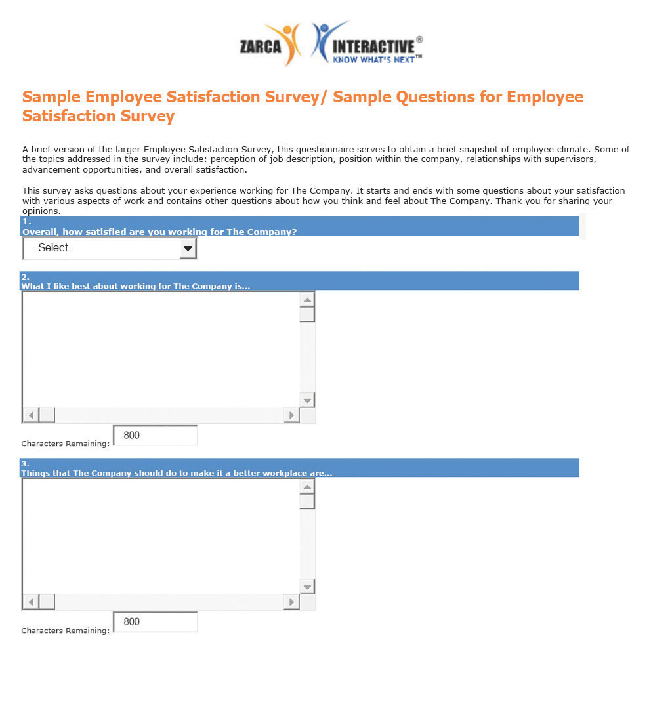

Effective high-performance work systems (HPWS)A set of systematic HR practices that create an environment where the employee has greater involvement and responsibility for the success of the organization. is the name given to a set of systematic HR practices that create an environment where the employee has greater involvement and responsibility for the success of the organization. A high-performance work system is a strategic approach to many of the things we do in HR, including retention. Generally speaking, a HPWS gets employees involved in conceiving, designing, and implementing processes that are better for the company and better for the employee, which increases retention. Figure 7.4 "HR Components of a HPWS" gives an example of HR’s part in creating these systems.
Figure 7.4 HR Components of a HPWS

Keeping HPWS in mind, we can begin to develop retention plans. The first step in this process is to understand some of the theories on job satisfaction and dissatisfaction. Next, we can gather data as to the satisfaction level of our current employees. Then we can begin to implement specific strategies for employee retention.
There are a number of theories that attempt to describe what makes a satisfied employee versus an unsatisfied employee. While you may have learned about these theories in another class, such as organizational behavior, they are worth a review here to help us better understand employee satisfaction from an HR perspective.
The first step to developing a retention plan is understanding some of the theories surrounding job satisfaction. One of the basic theories is the progression of job withdrawal theory, developed by Dan Farrell and James Petersen.Dan Farrell and James C. Petersen, “Commitment, Absenteeism and Turnover of New Employees: A Longitudinal Study,” Human Relations 37, no. 8 (August 1984): 681–692, accessed August 26, 2011, http://libres.uncg.edu/ir/uncg/f/J_Petersen_Commitment_1984.pdf. It says that people develop a set of behaviors in succession to avoid their work situation. These behaviors include behavior change, physical withdrawal, and psychological withdrawal.
Within the behavior change area, an employee will first try to change the situation that is causing the dissatisfaction. For example, if the employee is unhappy with the management style, he or she might consider asking for a department move. In the physical withdrawal phase, the employee does one of the following:
If an employee is unable to leave the job situation, he or she will experience psychological withdrawal. They will become disengaged and may show less job involvement and commitment to the organization, which can create large costs to the organization, such as dissatisfied customers.
Figure 7.5 Process of Job Withdrawal

Between 1927 and 1932, a series of experiments were conducted by Elton Mayo in the Western Electric Hawthorne Works company in Illinois.Elton Mayo, The Social Problems of an Industrial Civilization (1949; repr., New York: Arno Press, 2007). Mayo developed these experiments to see how the physical and environmental factors of the workplace, such as lighting and break times, would affect employee motivation.
This was some of the first research performed that looked at human motivation at work. His results were surprising, as he found that no matter which experiments were performed, worker output improved. His conclusion and explanation for this was the simple fact the workers were happy to receive attention from researchers who expressed interest in them. As a result, these experiments, scheduled to last one year, extended to five years to increase the knowledge base about human motivation.
The implication of this research applies to HR and managers even today. It tells us that our retention plans must include training and other activities that make the employee feel valued.
In 1943, Abraham Maslow developed what was known as the theory of human motivation.Abraham Maslow, Toward a Psychology of Being, 3rd ed. (New York: Wiley, 1999). His theory was developed in an attempt to explain human motivation. According to Maslow, there is a hierarchy of five needs, and as one level of need is satisfied, it will no longer be a motivator. In other words, people start at the bottom of the hierarchy and work their way up. Maslow’s hierarchy consists of the following:
Physiological needs are our most basic needs, including food, water, and shelter. Safety needs at work might include feeling safe in the actual physical environment, or job security. As humans, we have the basic need to spend time with others. Esteem needs refer to the need we have to feel good about ourselves. Finally, self-actualization needs are the needs we have to better ourselves.
The implications of his research tell us, for example, that as long as an employee’s physiological needs are met, increased pay may not be a motivator. Likewise, employees should be motivated at work by having all needs met. Needs might include, for example, fair pay, safety standards at work, opportunities to socialize, compliments to help raise our esteem, and training opportunities to further develop ourselves.
In 1959, Frederick Herzberg published The Motivation to Work,Frederick Herzberg, Bernard Mausner, and Barbara Bloch Snyderman, The Motivation to Work (New Brunswick, NJ: Transaction Publishers, 1993). which described his studies to determine which aspects in a work environment caused satisfaction or dissatisfaction. He performed interviews in which employees were asked what pleased and displeased them about their work. From his research, he developed the motivation-hygiene theory to explain these results.
The things that satisfied the employees were motivators, while the dissatisfiers were the hygiene factors. He further said the hygiene factors were not necessarily motivators, but if not present in the work environment, they would actually cause demotivation. In other words, the hygiene factors are expected and assumed, while they may not necessarily motivate.
His research showed the following as the top six motivation factorsPart of a theory developed by Herzberg that says some things will motivate an employee, such as being given responsibility.:
The following were the top six hygiene factorsPart of a theory developed by Herzberg that says some things will not necessarily motivate employees but will cause dissatisfaction if not present.:
The implication of this research is clear. Salary, for example, is on the hygiene factor list. Fair pay is expected, but it doesn’t actually motivate someone to do a better job. On the other hand, programs to further develop employees, such as management training programs, would be considered a motivator. Therefore, our retention plans should be focused on the area of fair salary of course, but if they take the direction of Herzberg’s motivational factors, the actual motivators tend to be the work and recognition surrounding the work performed.
Douglas McGregor proposed the X-Y theory in his 1960 book called The Human Side of Enterprise.Douglas McGregor, The Human Side of Enterprise (1960; repr., New York: McGraw-Hill, 2006). McGregor’s theory gives us a starting point to understanding how management style can impact the retention of employees. His theory suggests two fundamental approaches to managing people. Theory X managersAccording to McGregor, a type of manager who has a negative approach to employee motivation., who have an authoritarian management style, have the following fundamental management beliefs:
Theory Y managersAccording to McGregor, a type of manager who has a positive approach to employee motivation., on the other hand, have the following beliefs:
As you can see, these two belief systems have a large variance, and managers who manage under the X theory may have a more difficult time retaining workers and may see higher turnover rates. As a result, it is our job in HR to provide training opportunities in the area of management, so our managers can help motivate the employees. Training is a large part of the retention plan. This will be addressed in more detail in Section 7.3 "Implementing Retention Strategies".
What are the disadvantages of taking a theory X approach with your employees?
It is unknown for sure where this term was first used, although some believe it was coined in the 1700s during the Seven Years’ War. In business today, the stick approach refers to “poking and prodding” to get employees to do something. The carrot approach refers to the offering of some reward or incentive to motivate employees. Many companies use the stick approach, as in the following examples:
As you can see, the stick approach takes a punitive look at retention, and we know this may motivate for a short period of time, but not in the long term.
The carrot approach might include the following:
The carrot approach takes a much more positive approach to employee motivation but still may not be effective. For example, this approach can actually demotivate employees if they do not feel the goal is achievable. Also, if organizations use this as the only motivational technique, ignoring physiological rewards such as career growth, this could be a detriment as well. This approach is used as a retention method, usually as part of a compensation plan.
All the employee satisfaction theories we have discussed have implications for the development of our retention plans and reduction of turnover. These theories can be intertwined into the specific retention strategies we will implement. This is discussed in Section 7.3.1 "Salaries and Benefits".
After we have an understanding of why employees leave and employee satisfaction theories, research is our next step in developing a retention plan that will work for your organization. There isn’t a “one size fits all” approach to retention planning, so the research component is essential to formulate a plan that will make a difference in turnover rates.
Research can be performed in two ways. First, exit interviews of employees who are leaving the organization can provide important retention information. An exit interviewAn interview performed by HR or a manager that seeks information as to what the employee liked at the organization and what they see should be improved. is an interview performed by HR or a manager that seeks information as to what the employee liked at the organization and what they see should be improved. Exit interviews can be a valuable way to gather information about employee satisfaction and can serve as a starting point for determining any retention issues that may exist in the organization. However, the exit survey data should be reviewed over longer periods of time with several employees, so we can be sure we are not making retention plans based on the feedback of only a few people.
The second way to perform research is through employee satisfaction surveys. A standardized and widely used measure of job satisfaction is the job descriptive index (JDI)A standardized and widely used measure of job satisfaction, measuring five facets of job satisfaction. survey. While JDI was initially developed in 1969 at Bowling Green State University, it has gone through extensive revisions, the most recent one in 2009. JDI looks at five aspects of job satisfaction, including present job, present pay, opportunities for promotion, supervision, and coworkers.“Job Descriptive Index,” JDI Research Group, Bowling Green State University, accessed July 29, 2011, http://www.bgsu.edu/departments/psych/io/jdi/page54706.html. Each of the five facets contains nine or eighteen questions; the survey can be given in whole or measure only one facet. The value of the scale is that an HR manager can measure job satisfaction over a period of time and compare current results to past results and even compare job satisfaction at their company versus their industry. This allows the HR manager to consider changes in the organization, such as a change in compensation structure, and see how job satisfaction is impacted by the change.
Any type of survey can provide information on the employee’s satisfaction with their manager, workload, and other satisfaction and motivational issues. An example of a general employee satisfaction survey is shown in Figure 7.7 "A Sample Employee Satisfaction Survey". However, a few things should be considered when developing an employee satisfaction survey:
Once data have been gathered and analyzed, we can formulate our retention plans. Our plan should always be tied to the strategic goals of the organization and the HPWS previously developed, and awareness of motivational theories should be coupled with the plans. Here are the components of a retention plan:
In Section 7.3 "Implementing Retention Strategies", we will discuss the implementation of specific retention strategies.
Figure 7.7 A Sample Employee Satisfaction Survey
Source: “Sample Employee Satisfaction Surveys,” Zarca Interactive, accessed August 18, 2011, http://www.zarca.com/Online-Surveys-Employee/sample-employee-surveys.html.


How can you apply each of these motivation techniques to motivation theories?